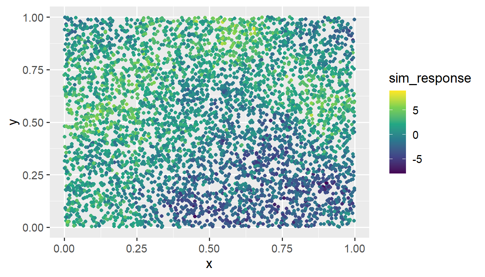
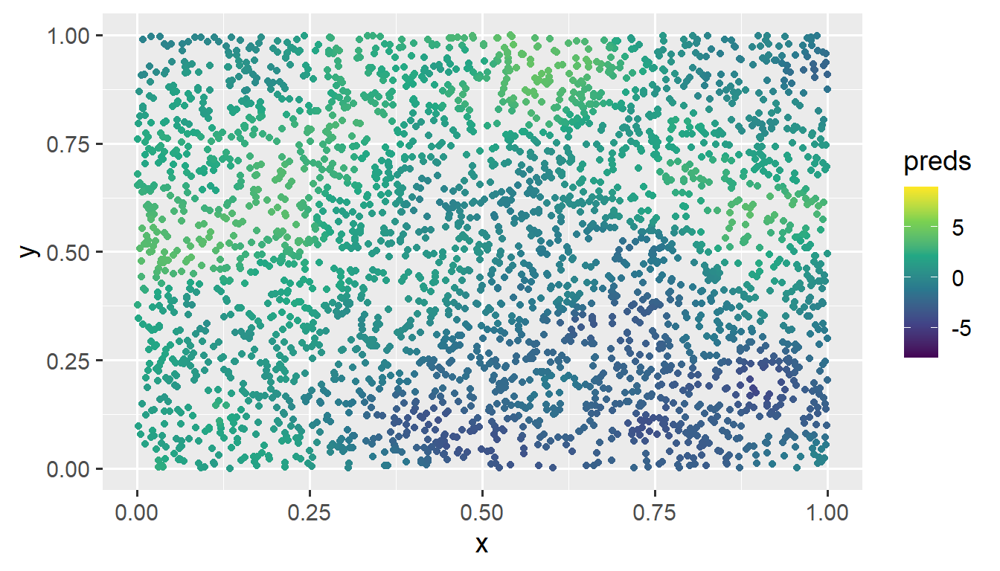

2 Additional spmodel Features
Throughout this section, we will use both the spmodel package and the ggplot2 package:
We will continue to use the moss data throughout this section.
Goals:
- Accommodate big spatial data:
- Incorporate additional arguments to
splm()(and later,spautor()) to:- Fit and predict for multiple models simultaneously.
- Fit a spatial linear model with non-spatial random effects.
- Fit a spatial linear model with anisotropy.
- Fit a spatial linear model with a partition factor.
- Fix certain spatial covariance parameters at known values.
- Fit a random forest spatial residual linear model and make predictions.
- Use the
spautor()function inspmodelto fit a spatial linear model to areal data:- Connect parameter estimates in the summary output of
spautor()to the spatial linear model introduced in Equation 1.4 in Chapter 1. - Apply some of the other functions introduced in Chapter 1 to a model object fit with
spautor().
- Connect parameter estimates in the summary output of
- Simulate spatial Gaussian data using
sprnorm().
2.1 Big Spatial Data
For large observed data sets, fitting spatial linear models or making predictions is challenging because these operations require a covariance matrix inverse, which are computationally challenging to obtain. Typically, observed data samples sizes approaching around 10,000 make model fitting or prediction infeasible on a standard computer in a reasonable amount of time (your definition of this may vary). This necessitates the use of model fitting and prediction tools that work for large data sets. spmodel offers big data methods for model fitting and prediction for point-referenced data via the local argument to splm() and predict().
2.1.1 Model Fitting
spmodel implements “local” spatial indexing as described by Ver Hoef et al. (2023). Observations are first assigned an index. Then for the purposes of model fitting, observations with different indexes are assumed uncorrelated. Assuming observations with different indexes are uncorrelated induces sparsity in the covariance matrix, which greatly reduces the computational time required for operations that involve its inverse. Models fit using spatial indexing are capable of fitting models with hundreds of thousands of observations relatively quickly. Ver Hoef et al. (2023) showed that in a variety of scenarios, spatial indexing yielded fixed effect confidence intervals with proper coverage.
To illustrate spatial indexing in spmodel, we first simulate a response variable sim_response with 5000 observations at random spatial locations in the unit square (sim_coords). Then we place the response and coordinates in a data.frame:
set.seed(06022024)
sim_params <- spcov_params("exponential", de = 7, ie = 2, range = 0.7)
n <- 5000
x <- runif(n)
y <- runif(n)
sim_coords <- data.frame(x, y)
sim_response <- sprnorm(sim_params, data = sim_coords, xcoord = x, ycoord = y)
sim_data <- data.frame(sim_coords, sim_response)We visualize the data by running
ggplot(sim_data, aes(x = x, y = y, color = sim_response)) +
geom_point() +
scale_color_viridis_c(limits = c(-8, 9)) +
theme_gray(base_size = 14)
We provide more detail regarding using spmodel to simulate data later on in this section.
We then use splm() to fit a spatial model to sim_data, providing the xcoord and ycoord arguments because sim_data is a data.frame, not an sf object. To implement spatial indexing, we use the local argument to splm(). Setting local to TRUE chooses default spatial indexing settings. We fit the model and time it by running
The model with 5000 observations is fit in just 10.88 seconds.
When the sample size is larger than 5000 observations, splm() implements spatial indexing by default, as fitting time without spatial indexing becomes lengthy. This behavior can be overridden by explicitly setting local to FALSE.
A summary of the model fit yields
summary(bdmod)
#>
#> Call:
#> splm(formula = sim_response ~ 1, data = sim_data, spcov_type = "exponential",
#> xcoord = x, ycoord = y, local = TRUE)
#>
#> Residuals:
#> Min 1Q Median 3Q Max
#> -8.4301 -1.8626 0.1926 1.8081 7.9181
#>
#> Coefficients (fixed):
#> Estimate Std. Error z value Pr(>|z|)
#> (Intercept) 0.5384 1.2610 0.427 0.669
#>
#> Coefficients (exponential spatial covariance):
#> de ie range
#> 4.3557 1.9964 0.4643The other way to specify local in splm() is via a list object, which offers much more control and customization over the spatial indexing. To learn more, read about local in splm()’s help page by running ?splm.
Even for two separate data sets with the same sample size fit on the same machine, the computational time required to fit models via spatial indexing varies, depending on many factors like the number of iterations required for convergence and the number of observations assigned to each spatial index.
2.1.2 Local Prediction
Using the fitted model, Ver Hoef et al. (2023) evaluates the performance of local neighborhood prediction. Local neighborhood prediction only uses some of the observed data to predict for an unobserved location of interest. Local neighborhood prediction is capable of making predictions of hundreds of thousands of observations relatively quickly. Ver Hoef et al. (2023) showed that in a variety of scenarios, local neighborhood prediction yielded prediction intervals with proper coverage.
To illustrate local neighborhood prediction in spmodel, we first simulate 3000 new random spatial locations in the unit square (sim_coords). Then we place the coordinates in a data.frame and visualize:
To implement local neighborhood prediction, we use the local argument to predict() (or augment()). Setting local in predict() (or augment()) to TRUE chooses default local neighborhood prediction settings. We compute local neighborhood predictions at the unobserved locations in sim_preds and time it by running
The 3000 predictions are computed in just 28.65 seconds. We visualize them by running
ggplot(sim_preds, aes(x = x, y = y, color = preds)) +
geom_point() +
scale_color_viridis_c(limits = c(-8, 9)) +
theme_gray(base_size = 14)
These predictions at the unobserved locations closely match the pattern of the observed data.
The other way to specify local in predict() (or augment()) is via a list object, which offers much more control and customization over the local neighborhood prediction. To learn more, read about local in predict()’s (or augment()’s) help page by running ?predict.spmodel (or ?augment.spmodel).
Most of the computational burden associated with prediction is actually from the observed data sample size used to fit the model (because an inverse is needed). As long as the observed data sample sizes are a few thousand or fewer, local prediction is not imperative, no matter the size of the prediction data. Note that parallel process can be used whether or not local prediction is implemented.
2.2 Additional Arguments
2.2.1 Multiple Models
splm() fits multiple models simultaneously when spcov_type is a vector with more than one element:
spmods is a list with two elements: exponential, using the exponential spatial covariance; and gaussian, using the Gaussian spatial covariance.
names(spmods)
#> [1] "exponential" "gaussian"spmods is natural to combine with glances() to glance at each model fit:
glances(spmods)
#> # A tibble: 2 × 10
#> model n p npar value AIC AICc logLik deviance pseudo.r.squared
#> <chr> <int> <dbl> <int> <dbl> <dbl> <dbl> <dbl> <dbl> <dbl>
#> 1 expon… 365 2 3 367. 373. 373. -184. 363. 0.683
#> 2 gauss… 365 2 3 435. 441. 441. -218. 363. 0.686and to combine with predict() to predict for each model fit.
2.2.2 Non-Spatial Random Effects
In the moss data, there are actually some spatial locations that have more than one measurement due to multiple samples being collected at a single location or due to a single sample being tested multiple times in the laboratory. The sample variable indexes the spatial location:
moss
#> Simple feature collection with 365 features and 7 fields
#> Geometry type: POINT
#> Dimension: XY
#> Bounding box: xmin: -445884.1 ymin: 1929616 xmax: -383656.8 ymax: 2061414
#> Projected CRS: NAD83 / Alaska Albers
#> # A tibble: 365 × 8
#> sample field_dup lab_rep year sideroad log_dist2road log_Zn
#> <fct> <fct> <fct> <fct> <fct> <dbl> <dbl>
#> 1 001PR 1 1 2001 N 2.68 7.33
#> 2 001PR 1 2 2001 N 2.68 7.38
#> 3 002PR 1 1 2001 N 2.54 7.58
#> 4 003PR 1 1 2001 N 2.97 7.63
#> 5 004PR 1 1 2001 N 2.72 7.26
#> 6 005PR 1 1 2001 N 2.76 7.65
#> 7 006PR 1 1 2001 S 2.30 7.59
#> 8 007PR 1 1 2001 N 2.78 7.16
#> 9 008PR 1 1 2001 N 2.93 7.19
#> 10 009PR 1 1 2001 N 2.79 8.07
#> # ℹ 355 more rows
#> # ℹ 1 more variable: geometry <POINT [m]>We might expect Zinc concentration to be correlated within a spatial location; therefore, we might want to add sample as a non-spatial random effect (here, an intercept random effect) to the model with log_Zn as the response and log_dist2road as the predictor. The splm() function allows non-spatial random effects to be incorporated with the random argument, which takes a formula specification that is similar in syntax as the nlme (Pinheiro and Bates 2006) and lme4 (Bates et al. 2015) packages.
randint <- splm(log_Zn ~ log_dist2road,
data = moss, spcov_type = "exponential",
random = ~ (1 | sample))For the randint model, in the random argument, sample is shorthand for (1 | sample). So the randint model could be written more concisely as
randint <- splm(log_Zn ~ log_dist2road,
data = moss, spcov_type = "exponential",
random = ~ sample)The summary output now shows an estimate of the variance of the random intercepts, in addition to the estimated fixed effects and estimated spatial covariance parameters.
summary(randint)
#>
#> Call:
#> splm(formula = log_Zn ~ log_dist2road, data = moss, spcov_type = "exponential",
#> random = ~sample)
#>
#> Residuals:
#> Min 1Q Median 3Q Max
#> -2.6234 -1.3228 -0.8026 -0.2642 1.0998
#>
#> Coefficients (fixed):
#> Estimate Std. Error z value Pr(>|z|)
#> (Intercept) 9.66066 0.26770 36.09 <2e-16 ***
#> log_dist2road -0.55028 0.02071 -26.58 <2e-16 ***
#> ---
#> Signif. codes: 0 '***' 0.001 '**' 0.01 '*' 0.05 '.' 0.1 ' ' 1
#>
#> Pseudo R-squared: 0.6605
#>
#> Coefficients (exponential spatial covariance):
#> de ie range
#> 3.153e-01 2.094e-02 1.083e+04
#>
#> Coefficients (random effects):
#> 1 | sample
#> 0.07995And, glances() shows that the model with the random intercepts is a better fit to the data than the model without random intercepts.
spmod <- splm(log_Zn ~ log_dist2road,
data = moss, spcov_type = "exponential")
glances(spmod, randint)
#> # A tibble: 2 × 10
#> model n p npar value AIC AICc logLik deviance pseudo.r.squared
#> <chr> <int> <dbl> <int> <dbl> <dbl> <dbl> <dbl> <dbl> <dbl>
#> 1 randi… 365 2 4 335. 343. 343. -168. 363. 0.661
#> 2 spmod 365 2 3 367. 373. 373. -184. 363. 0.683As another example, we might consider a model that also has random intercepts for year, or, a model that also has both random intercepts for year and random slopes for log_dist2road within year:
glances() shows that, of these four models, the model that includes random intercepts for sample, random intercepts for year, and random slopes for year is best, according to the AIC and AICc metrics.
glances(spmod, randint, yearint, yearsl)
#> # A tibble: 4 × 10
#> model n p npar value AIC AICc logLik deviance pseudo.r.squared
#> <chr> <int> <dbl> <int> <dbl> <dbl> <dbl> <dbl> <dbl> <dbl>
#> 1 yearsl 365 2 6 190. 202. 202. -94.9 363. 0.215
#> 2 yeari… 365 2 4 230. 238. 238. -115. 363. 0.729
#> 3 randi… 365 2 4 335. 343. 343. -168. 363. 0.661
#> 4 spmod 365 2 3 367. 373. 373. -184. 363. 0.683The syntax ~ (log_dist2road | year) specifies that both random intercepts for year and random slopes for log_dist2road within year should be included in the model. If only random slopes are desired, then we should set random to ~ (-1 + log_dist2road | year).
2.2.3 Anisotropy
By default, splm() uses isotropic spatial covariance. Spatial covariance is isotropic if it behaves similarly in all directions. A spatial covariance is (geometrically) anisotropic if it does not behave similarly in all directions. Anisotropic models require estimation of two additional parameters: rotate and scale, which control the behavior of the spatial covariance as a function of distance and direction.
aniso <- splm(log_Zn ~ log_dist2road,
data = moss, spcov_type = "exponential",
anisotropy = TRUE)
aniso
#>
#> Call:
#> splm(formula = log_Zn ~ log_dist2road, data = moss, spcov_type = "exponential",
#> anisotropy = TRUE)
#>
#>
#> Coefficients (fixed):
#> (Intercept) log_dist2road
#> 9.548 -0.546
#>
#>
#> Coefficients (exponential spatial covariance):
#> de ie range rotate scale
#> 3.561e-01 6.812e-02 8.732e+03 2.435e+00 4.753e-01We can again use glances to compare the model that allows for anisotropy with the isotropic model:
glances(spmod, aniso)
#> # A tibble: 2 × 10
#> model n p npar value AIC AICc logLik deviance pseudo.r.squared
#> <chr> <int> <dbl> <int> <dbl> <dbl> <dbl> <dbl> <dbl> <dbl>
#> 1 aniso 365 2 5 362. 372. 372. -181. 363 0.705
#> 2 spmod 365 2 3 367. 373. 373. -184. 363. 0.683The anisotropic model does have lower AIC and AICc than the isotropic model, indicating a better fit. However, the reduction in AIC and AICc is quite small, so we may still prefer the isotropic model for simplicity and interpretability.
2.2.4 Partition Factors
A partition factor is a categorical (or factor) variable that forces observations in different levels of the partition factor to be uncorrelated. The year variable in moss has two levels, 2001 and 2006, which correspond to the year of measurement. Suppose the goal is to fit a model that assumes observations from the same year are spatially correlated but observations from different years are not spatially correlated. In this context, year is a partition factor. We fit this model by running
part <- splm(log_Zn ~ log_dist2road,
data = moss, spcov_type = "exponential",
partition_factor = ~ year)Like the formula and random arguments, the partition_factor argument requires a formula object.
2.2.5 Fixing Covariance Parameters
By default, splm() estimates all unknown covariance parameters. However, we can also fix covariance parameters at known values with the spcov_initial argument for spatial covariance parameters and with the randcov_initial argument for non-spatial covariance parameters.
As an example, suppose that we want to fit a "spherical" covariance model to the moss data, but that, we want to fix the range at 20000 units so that errors from spatial locations more than 20000 units apart are not spatially correlated. We first create an spcov_initial object with the spcov_initial() function:
init_spher <- spcov_initial("spherical", range = 20000, known = "range")
init_spher
#> $initial
#> range
#> 20000
#>
#> $is_known
#> range
#> TRUE
#>
#> attr(,"class")
#> [1] "spherical"Within the function call, we specify that, for a "spherical" covariance, we would like to set the range parameter to 20000 and for that value to be known and therefore fixed in any subsequent estimation. We then provide init_spher as an argument to spcov_initial in splm():
splm(log_Zn ~ log_dist2road, data = moss,
spcov_initial = init_spher)
#>
#> Call:
#> splm(formula = log_Zn ~ log_dist2road, data = moss, spcov_initial = init_spher)
#>
#>
#> Coefficients (fixed):
#> (Intercept) log_dist2road
#> 9.7194 -0.5607
#>
#>
#> Coefficients (spherical spatial covariance):
#> de ie range
#> 4.545e-01 8.572e-02 2.000e+04When spcov_initial is provided, spcov_type is not a necessary argument to splm().
2.2.6 Random Forest Spatial Residual Models
Random forests are a popular machine-learning modeling tool. The random forest spatial residual model available in spmodel combines random forest modeling and spatial linear models. First, the model is fit using random forests and fitted values are obtained. Then the response residuals are used to fit a spatial linear model. Predictions at unobserved locations are computed as the sum of the random forest prediction and the predicted (i.e., Kriged) response residual from the spatial linear model. Suppose we split the moss data into training and test data sets, with the goal of predicting log_Zn in the test data.
We fit a random forest spatial residual model to the test data by running
rfsrmod <- splmRF(log_Zn ~ log_dist2road, moss_train,
spcov_type = "exponential")We make predictions for the test data by running
# results omitted
predict(rfsrmod, moss_test)2.3 Areal Data
2.3.1 Data Introduction
Throughout the section, we will use the seal data in the spmodel package. The seal data is an sf object with a POLYGON geometry. There are 62 polygons in the data, some of which have non-missing values of log_trend, which is the log of the estimated harbor-seal trends that were calculated from abundance data.
The following code generates a visualization of the seal data: polygons that are grey have a missing value for log_trend.
ggplot(seal, aes(fill = log_trend)) +
geom_sf() +
scale_fill_viridis_c() +
theme_bw(base_size = 14) Our goal is to fit a spatial autoregressive model (Equation 1.4 and Equation 1.6) to the log_trend response variable with the spautor() function. Then, we will use the fitted model to predict the log_trend for sites where log_trend is not recorded.
2.3.2 spautor() Syntax and Output Interpretation
The syntax for fitting a model to areal data with spautor() is very similar to that used for splm(). Again, there are generally at least three required arguments:
-
formula: a formula that describes the relationship between the response variable (\(\mathbf{y}\)) and explanatory variables (\(\mathbf{X}\)) -
data: adata.frameorsfobject that contains the response variable, explanatory variables, and spatial information. Note that ifdatais adata.frame, thenWis an additional required argument tospautor(). -
spcov_type: the spatial covariance type ("car"or"sar")
We can fit a conditional auto-regressive (CAR) model with
sealmod <- spautor(log_trend ~ 1, data = seal, spcov_type = "car")
summary(sealmod)
#>
#> Call:
#> spautor(formula = log_trend ~ 1, data = seal, spcov_type = "car")
#>
#> Residuals:
#> Min 1Q Median 3Q Max
#> -0.34455 -0.10417 0.04410 0.07338 0.20475
#>
#> Coefficients (fixed):
#> Estimate Std. Error z value Pr(>|z|)
#> (Intercept) -0.07090 0.02497 -2.839 0.00452 **
#> ---
#> Signif. codes: 0 '***' 0.001 '**' 0.01 '*' 0.05 '.' 0.1 ' ' 1
#>
#> Coefficients (car spatial covariance):
#> de range extra
#> 0.03252 0.42037 0.02177We can relate some of the components in the summary output to the model in Equation 1.4 and Equation 1.6:
- the value in the
Estimatecolumn of theCoefficients (fixed)table form \(\boldsymbol{\hat{\beta}}\), an estimate of \(\boldsymbol{\beta}\). - the
devalue of 0.033 in theCoefficients (car spatial covariance)table is \(\hat{\sigma}^2_{de}\), which is an estimate of \(\sigma^2_{de}\), the variance of \(\boldsymbol{\tau}\). - the
rangevalue of 0.42 in theCoefficients (car spatial covariance)table is \(\hat{\phi}\), an estimate of \(\phi\) in Equation 1.6.
By default, \(\sigma^2_{ie}\) is assumed to be 0 for autoregressive models and hence, ie is omitted from the summary output.
Though the weight matrix \(\mathbf{W}\) in Equation 1.6 used in the model does not appear in the summary output, we can pull the weight matrix from the sealmod object with
sealmod$WBy default, spautor() uses queen contiguity to form the weight matrix: observations are “neighbors” if they share at least one boundary (even if that boundary is a single point). Recall that observations are not considered neighbors with themselves. Also by default, spautor() row standardizes the weight matrix so that each of the rows in \(\mathbf{W}\) sum to \(1\). Row standardization of the weight matrix is performed by default because doing so results in “nice” properties of the resulting covariance matrix (Ver Hoef et al. 2018). The first row of the weight matrix is
sealmod$W[1, ]
#> [1] 0.0000000 0.3333333 0.0000000 0.0000000 0.0000000 0.0000000 0.0000000
#> [8] 0.0000000 0.0000000 0.0000000 0.0000000 0.0000000 0.0000000 0.0000000
#> [15] 0.0000000 0.3333333 0.0000000 0.0000000 0.0000000 0.0000000 0.0000000
#> [22] 0.0000000 0.0000000 0.0000000 0.0000000 0.0000000 0.0000000 0.3333333
#> [29] 0.0000000 0.0000000 0.0000000 0.0000000 0.0000000 0.0000000 0.0000000
#> [36] 0.0000000 0.0000000 0.0000000 0.0000000 0.0000000 0.0000000 0.0000000
#> [43] 0.0000000 0.0000000 0.0000000 0.0000000 0.0000000 0.0000000 0.0000000
#> [50] 0.0000000 0.0000000 0.0000000 0.0000000 0.0000000 0.0000000 0.0000000
#> [57] 0.0000000 0.0000000 0.0000000 0.0000000 0.0000000 0.0000000The output indicates that the first observation is neighbors with the second observation, the sixteenth observation, and the twenty-eighth observation.
which(sealmod$W[1, ] > 0)
#> [1] 2 16 28Finally, if we re-examine \(\mathbf{W}\), we can note that some rows of \(\mathbf{W}\) do not have any positive values, indicating that some observations in the data have no neighbors. Looking back on the plot of the data, we see that there are indeed a few “island” sites that do not share a boundary with any other polygons. The errors for these spatial locations are assumed to be uncorrelated with all other random errors, and, they are given a unique variance parameter that is the extra spatial covariance estimate in the summary output of the model.
2.3.3 Additional Analysis
Most of the helper functions for models fit with splm() are also useful for models fit with spautor(). Additionally, most of the additional arguments for splm() are also additional arguments for spautor().
All helper functions available for splm() model objects are also available for spautor() model objects:
-
augment(),glance(), andglances() - model fit statistics with
AIC(),AICc()andGR2() - model diagnostics statistics with
cooks.distance(),residuals(),fitted(), etc.
spautor() model objects accommodate all additional arguments previously mentioned except big data sets and anisotropy.
Big data applications are not available because the models are parameterized in terms of their inverse covariance matrix, not the covariance matrix, which makes the “local” approach infeasible. The anisotropy argument is not available for spautor() because the covariance for an autoregressive model is based on the neighborhood structure of the spatial locations, not on distance.
2.3.4 Prediction with Areal Data
Prediction of response values for unobserved polygons with areal data requires that the polygons with missing response values be included in the data argument supplied to spautor(). The reason for this requirement is that exclusion of these polygons changes the underlying neighborhood structure of the data, and, therefore changes the covariance matrix.
For areal data, we can obtain predictions for unobserved polygons using predict() on the fitted model object or augment() on the fitted model object, specifying the newdata argument to be mod$newdata. Both approaches are given below:
augment(sealmod, newdata = sealmod$newdata)
#> Simple feature collection with 28 features and 2 fields
#> Geometry type: POLYGON
#> Dimension: XY
#> Bounding box: xmin: 913618.8 ymin: 1007542 xmax: 1115097 ymax: 1132682
#> Projected CRS: NAD83 / Alaska Albers
#> # A tibble: 28 × 3
#> log_trend .fitted geometry
#> * <dbl> <dbl> <POLYGON [m]>
#> 1 NA -0.115 ((1035002 1054710, 1035002 1054542, 1035002 1053542, 1…
#> 2 NA -0.00908 ((1043093 1020553, 1043097 1020550, 1043101 1020550, 1…
#> 3 NA -0.0602 ((1099737 1054310, 1099752 1054262, 1099788 1054278, 1…
#> 4 NA -0.0359 ((1099002 1036542, 1099134 1036462, 1099139 1036431, 1…
#> 5 NA -0.0723 ((1076902 1053189, 1076912 1053179, 1076931 1053179, 1…
#> 6 NA -0.0548 ((1070501 1046969, 1070317 1046598, 1070308 1046542, 1…
#> 7 NA -0.0976 ((1072995 1054942, 1072996 1054910, 1072997 1054878, 1…
#> 8 NA -0.0714 ((960001.5 1127667, 960110.8 1127542, 960144.1 1127495…
#> 9 NA -0.0825 ((1031308 1079817, 1031293 1079754, 1031289 1079741, 1…
#> 10 NA -0.0592 ((998923.7 1053647, 998922.5 1053609, 998950 1053631, …
#> # ℹ 18 more rowsThe mod$newdata syntax also works for models fit with splm(), where the data used contains missing values for the response variable at any unobserved locations.
2.4 Simulating Spatial Gaussian Data
We simulate Gaussian spatial data using sprnorm(). sprnorm() is similar in structure to rnorm() for simulating non-spatial Gaussian data. The first argument to sprnorm() is spcov_params, which is a spatial covariance parameter object created with spcov_params():
params <- spcov_params("exponential", de = 1, ie = 0.5, range = 5e5)When the type argument to coef() is "spcov", the estimated spatial covariance parameters are returned as an spcov_params object, naturally usable simulation-based contexts that require conditioning on these estimated parameters.
sprnorm() simulates data at each location in data for each of n samples (specified via n) with some mean vector (specified via mean). We simulate one realization of zero-mean Gaussian data with spatial covariance structure from params at each location in the sulfate data by running
Simulating spatial data in spmodel requires the inverse (more rigorously, the Cholesky decomposition) of the covariance matrix, which can take awhile for sample sizes exceeding 10,000. Regardless of the number of realizations simulated, this inverse is only needed once, which means that simulating many realizations (via samples) takes nearly the same time as simulating just one.
We visualize this realization by running
ggplot(sulfate, aes(color = z)) +
geom_sf() +
scale_color_viridis_c() +
theme_gray(base_size = 14)We visualize an empirical semivariogram of this realization by running
esv_out <- esv(z ~ 1, sulfate)
ggplot(esv_out, aes(x = dist, y = gamma, size = np)) +
geom_point() +
lims(y = c(0, NA)) +
theme_gray(base_size = 14)
The empirical semivariogram is a diagnostic tool that can be used to characterize spatial dependence. On the x-axis is distance between observations. On the y-axis is the average squared difference between response variables (semivariance) in different distance “bins”. Typically when spatial dependence exists, the semivariance is smaller at short distances and larger at far distances. In the figure above, the size of the circle is proportional to the number of unique response variable pairs used in the distance bin. To assess leftover spatial dependence in a model, typically semivariograms are constructed on residuals from the nonspatial fitted model. The empirical semivariogram is intimately connected to empirical correlations/correllograms.
2.5 R Code Appendix
library(spmodel)
library(ggplot2)
set.seed(06022024)
sim_params <- spcov_params("exponential", de = 7, ie = 2, range = 0.7)
n <- 5000
x <- runif(n)
y <- runif(n)
sim_coords <- data.frame(x, y)
sim_response <- sprnorm(sim_params, data = sim_coords, xcoord = x, ycoord = y)
sim_data <- data.frame(sim_coords, sim_response)
ggplot(sim_data, aes(x = x, y = y, color = sim_response)) +
geom_point() +
scale_color_viridis_c(limits = c(-8, 9)) +
theme_gray(base_size = 14)
fit_start_time <- proc.time()
bdmod <- splm(sim_response ~ 1, data = sim_data,
spcov_type = "exponential",
xcoord = x, ycoord = y,
local = TRUE)
fit_end_time <- proc.time()
fit_end_time - fit_start_time
summary(bdmod)
n_pred <- 3000
x_pred <- runif(n_pred)
y_pred <- runif(n_pred)
sim_preds <- tibble::tibble(x = x_pred, y = y_pred)
pred_start_time <- proc.time()
sim_preds$preds <- predict(bdmod, newdata = sim_preds, local = TRUE)
pred_end_time <- proc.time()
pred_end_time - pred_start_time
ggplot(sim_preds, aes(x = x, y = y, color = preds)) +
geom_point() +
scale_color_viridis_c(limits = c(-8, 9)) +
theme_gray(base_size = 14)
spmods <- splm(formula = log_Zn ~ log_dist2road, data = moss,
spcov_type = c("exponential", "gaussian"))
names(spmods)
glances(spmods)
tidy(spmods$gaussian, conf.int = TRUE, conf.level = 0.90)
confint(spmods$gaussian, level = 0.90)
moss
randint <- splm(log_Zn ~ log_dist2road,
data = moss, spcov_type = "exponential",
random = ~ (1 | sample))
randint <- splm(log_Zn ~ log_dist2road,
data = moss, spcov_type = "exponential",
random = ~ sample)
summary(randint)
spmod <- splm(log_Zn ~ log_dist2road,
data = moss, spcov_type = "exponential")
glances(spmod, randint)
yearint <- splm(log_Zn ~ log_dist2road,
data = moss, spcov_type = "exponential",
random = ~ (1 | sample + year))
yearsl <- splm(log_Zn ~ log_dist2road,
data = moss, spcov_type = "exponential",
random = ~ (1 | sample) +
(log_dist2road | year))
glances(spmod, randint, yearint, yearsl)
nospcov <- splm(log_Zn ~ log_dist2road,
data = moss, spcov_type = "none",
random = ~ (1 | sample) +
(log_dist2road | year))
glances(spmod, randint, yearint, yearsl, nospcov)
## the model with no explicit spatial covariance has the worst fit
## of the five models.
aniso <- splm(log_Zn ~ log_dist2road,
data = moss, spcov_type = "exponential",
anisotropy = TRUE)
aniso
glances(spmod, aniso)
plot(aniso, which = 8)
part <- splm(log_Zn ~ log_dist2road,
data = moss, spcov_type = "exponential",
partition_factor = ~ year)
init_spher <- spcov_initial("spherical", range = 20000, known = "range")
init_spher
splm(log_Zn ~ log_dist2road, data = moss,
spcov_initial = init_spher)
init_no_ie <- spcov_initial("spherical", ie = 0, known = "ie")
no_ie <- splm(log_Zn ~ log_dist2road, data = moss,
spcov_initial = init_no_ie)
summary(no_ie)
set.seed(1)
n <- NROW(moss)
n_train <- round(0.75 * n)
n_test <- n - n_train
train_index <- sample(n, size = n_train)
moss_train <- moss[train_index, , ]
moss_test <- moss[-train_index, , ]
rfsrmod <- splmRF(log_Zn ~ log_dist2road, moss_train,
spcov_type = "exponential")
# results omitted
predict(rfsrmod, moss_test)
rf_preds <- predict(rfsrmod, newdata = moss_test)
rf_errors <- moss_test$log_Zn - rf_preds
mean(rf_errors^2)
splmmod <- splm(log_Zn ~ log_dist2road, moss_train,
spcov_type = "exponential")
splm_preds <- predict(splmmod, newdata = moss_test)
splm_errors <- moss_test$log_Zn - splm_preds
mean(splm_errors^2)
ggplot(seal, aes(fill = log_trend)) +
geom_sf() +
scale_fill_viridis_c() +
theme_bw(base_size = 14)
sealmod <- spautor(log_trend ~ 1, data = seal, spcov_type = "car")
summary(sealmod)
spcov_params_car <- coef(sealmod, type = "spcov")
de_car <- as.vector(round(spcov_params_car[["de"]], digits = 3))
range_car <- as.vector(round(spcov_params_car[["range"]], digits = 3))
sealmod$W
sealmod$W[1, ]
which(sealmod$W[1, ] > 0)
AIC(sealmod)
fitted(sealmod)
sealmod <- spautor(log_trend ~ 1, data = seal, spcov_type = "car")
summary(sealmod)
predict(sealmod)
augment(sealmod, newdata = sealmod$newdata)
is_missing <- is.na(seal$log_trend)
seal_nomiss <- seal[!is_missing, , ]
sealmod_nomiss <- spautor(log_trend ~ 1,
data = seal_nomiss, spcov_type = "car")
print(sealmod)
print(sealmod_nomiss)
params <- spcov_params("exponential", de = 1, ie = 0.5, range = 5e5)
set.seed(1)
sulfate$z <- sprnorm(params, data = sulfate)
ggplot(sulfate, aes(color = z)) +
geom_sf() +
scale_color_viridis_c() +
theme_gray(base_size = 14)
esv_out <- esv(z ~ 1, sulfate)
ggplot(esv_out, aes(x = dist, y = gamma, size = np)) +
geom_point() +
lims(y = c(0, NA)) +
theme_gray(base_size = 14)